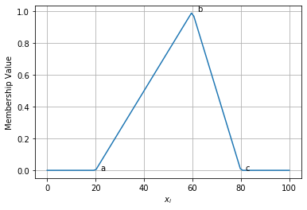
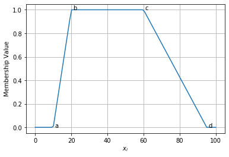
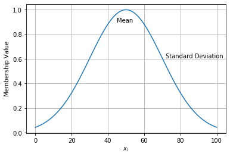
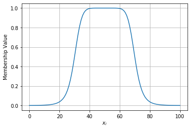
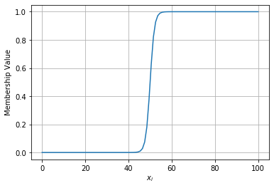
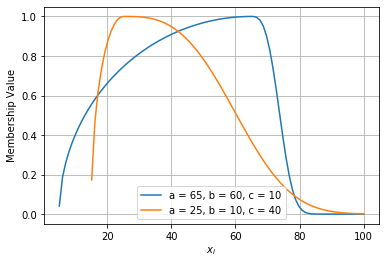
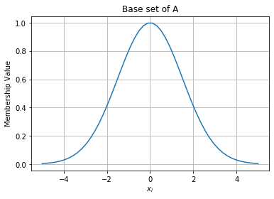
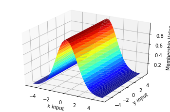
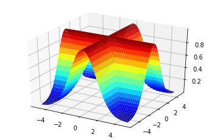
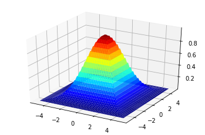

Fuzzy Logic Membership Functions
Table of Contents


A membership function is a method of translating a crisp value \(x \in \mathbb{R}\) into a fuzzy set. In other words, we can find the membership grade (the amount of membership) for x with a value between 0 and 1. If the membership grade is only 0 or 1, then we are using classical sets.
\[ A = \{(x, \mu_A(x)) | x \in X\}, \]
where \(\mu_A(x)\) is the Membership function (MF) for the fuzzy set \(A\).
To make these MFs, we will use the FuzzyTorch library.
import os; os.chdir("../")
from functools import partial import torch import numpy as np import matplotlib.pyplot as plt from mpl_toolkits.mplot3d import Axes3D import seaborn as sns # Our Membership Functions import from src.functional.membership import *
x = torch.linspace(0, 100, 100).view(-1, 1) def draw_function(func): sns.lineplot(x.flatten().numpy(), func.flatten()) plt.xlabel("$$x_i$$") plt.ylabel("Membership Value") plt.grid()
1 Triangluar Function
A triangular MF is created using three parameters \(\{a, b, c\}, a < b < c\):
\[ \operatorname{triangle}(x ; a, b, c)=\left\{\begin{array}{cc}{0,} & {x \leq a} \\ {\frac{x-a}{b-a},} & {a \leq x \leq b} \\ {\frac{c-x}{c-b},} & {b \leq x \leq c} \\ {0,} & {c \leq x}\end{array}\right. \]
help(triangle)
Help on function triangle in module src.functional.membership:
triangle(x, a, b, c)
Triangular Membership Function
:param x: input value
:param a: start point where membership is 0
:param b: center point where membership is 1
:param c: end point where membership is 0
tri = partial(triangle, a=20, b=60, c=80) draw_function(tri(x)) plt.text(22, tri(20), "a") plt.text(62, tri(60), "b") plt.text(82, tri(80), "c")
Text(82, tensor([0.]), 'c')

Trapezoid Membership Function
\[ \operatorname{trapezoid}(x ; a, b, c, d)=\left\{\begin{array}{ll}{0,} & {x \leq a} \\ {\frac{x-a}{b-a},} & {a \leq x \leq b} \\ {\frac{d-x}{d-c},} & {c \leq x \leq d} \\ {0,} & {d \leq x}\end{array}\right. \]
help(trapezoid)
Help on function trapezoid in module src.functional.membership:
trapezoid(x, a, b, c, d)
Trapezoidal Membership Function
:param x: input value
:param a: bottom left point where membership is 0
:param b: top left point where membership is 1
:param c: top right point where membership is 1
:param d: bottom right point where membership is 0
trap = partial(trapezoid, a=10, b=20, c=60, d=95) draw_function(trap(x)) plt.text(11, trap(10), "a") plt.text(21, trap(20), "b") plt.text(61, trap(60), "c") plt.text(96, trap(95), "d")
Text(96, tensor([0.]), 'd')

2 Gaussian Membership Function
\[ \operatorname{gaussian}(x ; c, \sigma)=e^{-\frac{1}{2}\left(\frac{x-c}{\sigma}\right)^{2}} \]
help(gaussian)
Help on function gaussian in module src.functional.membership:
gaussian(x, a, b)
Gaussian Membership Function
:param x: input value
:param a: The mean of the Gaussian Distribution
:param b: The standard deviation of the Distribution
Usage: gaussian(40, a=50, b=20)
gaussian(torch.Tensor([[20],[30]]), a=50, b=20)
gaus = partial(gaussian, a=50, b=20) draw_function(gaus(x)) plt.text(50-5, gaus(50)-0.1, "Mean") plt.text(50+22, gaus(50+20), "Standard Deviation")
Text(72, tensor([0.6065]), 'Standard Deviation')

General Bell Curve Membership Function
\[ \operatorname{bell}(x ; a, b, c)=\frac{1}{1+\left|\frac{x-c}{a}\right|^{2 b}} \]
help(bell)
Help on function bell in module src.functional.membership:
bell(x, a, b, c)
General Bell Curve Membership Function
:param x: input value
:param a: width of bell curve.
:param b: slop of the curve, lower values = curvier
:param c: centre of the curve.
bellf = partial(bell, a=20, b=4, c=50)
draw_function(bellf(x))

3 Sigmoidal Membership Function
\[ \operatorname{sigmoid}(x ; a, c)=\frac{1}{1+\exp [-a(x-c)]} \]
help(sigmoid)
Help on function sigmoid in module src.functional.membership:
sigmoid(x, a, b)
Sigmoidal Membership Function
:param x: input value
:param a: amount of curvature, higher values = unit step
:param b: 0.5 centre posistion
sig = partial(sigmoid, a=1, b=50)
draw_function(sig(x))

Left-Right (LR) Membership Function
\[ \operatorname{lr}(x ; c, \alpha, \beta)=\left\{\begin{array}{ll}{F_{L}} & {\left(\frac{c-x}{\alpha}\right), \quad x \leq c} \\ {F_{R}} & {\left(\frac{x-c}{\beta}\right), \quad x \geq c}\end{array}\right. \]
where \(F_L(x)\) and \(F_R(x)\) are monotonically decreasing functions. Let
\[\begin{aligned} F_{L}(x) &=\max \left(0, \sqrt{1-x^{2}}\right) \\ F_{R}(x) &=e^{-|x|^{3}} \end{aligned}\]
help(lr)
Help on function lr in module src.functional.membership:
lr(x, a, b, c)
Left-Right (LR) Membership Function
:param x: input value
:param a: centre point of change
:param b: rate of decay after change
:param c: length of decay
lr1 = partial(lr, a=65, b=60, c=10) lr2 = partial(lr, a=25, b=10, c=40) draw_function(lr1(x)) draw_function(lr2(x)) plt.grid() plt.legend(["a = 65, b = 60, c = 10", "a = 25, b = 10, c = 40"])
<matplotlib.legend.Legend at 0x7f37d3458048>

4 Multi-Dimensional Functions
The combination of different functions can be applied to many inputs. Here, we shall consider two variables \(x, y\) to demonstrate how MFs can be used with AND, OR operations.
# Our two variables x = torch.linspace(-5, 5, 50) y = torch.linspace(-5, 5, 50)
The single dimension function can be referred to as a \(\textit{base set}\).
\[ \operatorname{Base Set} = \mu_A(x) = \operatorname{gaussian}(x; a, b) \]
fig = plt.figure() draw_function(gaussian(x, 0, 1.5)) plt.title("Base set of A")
Text(0.5, 1.0, 'Base set of A')

This can be turned into a cylindrical extension through:
\[ c(A) = \int_{X \times Y} \mu_A(X) / (x, y) \]
where c(A) is our cylindrical extension.
fig = plt.figure() ax = fig.add_subplot(111, projection="3d") xx, yy = np.meshgrid(x.numpy(), y.numpy()) ax.plot_surface(xx, yy, gaussian(torch.Tensor(xx), 0., 1.5).numpy(), cmap="jet") ax.set_xlabel("x input") ax.set_ylabel("y input") ax.set_zlabel("Membership Value")
Text(0.5, 0, 'Membership Value')

To use AND and OR operations, we can use the min and max respectively of two MF functions for each input dimension. The logical `and` is:
\[ \mu_A(x) \land \mu_A(y) = max(\mu_A(x), \mu_A(y)) \]
and the logical `or` is:
\[ \mu_A(x) \lor \mu_A(y) = min(\mu_A(x), \mu_A(y)) \]
fig = plt.figure() ax = fig.add_subplot(111, projection="3d") xx, yy = np.meshgrid(x.numpy(), y.numpy()) andOp = torch.max(gaussian(torch.Tensor(xx), 0, 1.5), gaussian(torch.Tensor(yy), 0, 1.5)) ax.plot_surface(xx, yy, andOp.numpy(), cmap="jet")

fig = plt.figure() ax = fig.add_subplot(111, projection="3d") orOp = torch.min(gaussian(torch.Tensor(xx), 0, 1.5), gaussian(torch.Tensor(yy), 0, 1.5)) ax.plot_surface(xx, yy, orOp.numpy(), cmap="jet")
